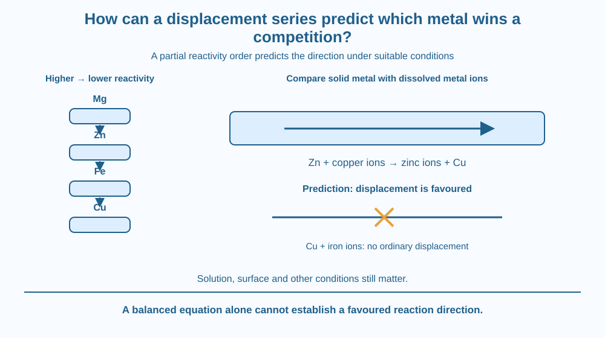

Use a reactivity series to predict the direction of a metal-displacement reaction. Distinguish predicting which metal can replace another from merely recognising a reaction after it occurs. Work with written equations and paper cards rather than metal salts or laboratory chemicals.
An iron strip can acquire a copper coating in a suitable copper-salt solution. Reversing the labels does not automatically reverse the reaction: copper placed in a suitable iron-salt solution does not simply make iron coat the copper under the same ordinary conditions.
Why should the direction matter? The two metals do not compete equally in this setting. Their positions in a relative reactivity order help predict which can enter solution while another metal is deposited.
A prediction needs a comparison, not just the statement that metals are reactive. Different metals have different tendencies under specified conditions.
A displacement reaction can occur when a more reactive metal replaces a less reactive metal from a suitable solution of its salt. The solid starting metal and the dissolved metal ions play different roles.
A useful school-level partial order is magnesium > zinc > iron > copper. The greater-than sign here means higher in this reactivity order, not a statement about density, cost, melting point or usefulness in construction.
For a standard example, iron reacts with copper sulphate solution to form iron(II) sulphate and copper: Fe + CuSO4 → FeSO4 + Cu. Iron lies above copper in the simplified series, so the predicted displacement direction agrees with this example under suitable conditions.
The copper initially belongs to dissolved copper ions, not tiny pre-existing copper flakes waiting to stick. During the reaction copper ions gain electrons and become copper metal, while iron atoms enter solution as ions. The relative-order prediction identifies which direction is favoured in this school model.
Writing Cu + FeSO4 → CuSO4 + Fe does not make the reverse displacement happen spontaneously under the same ordinary conditions. Copper is below iron in the order used here. A balanced-looking equation is not by itself evidence that the written process will proceed.
The same comparison predicts zinc displacing copper from a suitable copper-salt solution and iron failing to displace zinc from a suitable zinc-salt solution. We compare the free metal with the metal represented by the dissolved ions, not with the name of the entire salt as though it were one metal.
The series is a predictive guide with conditions. Surface coatings, concentration, temperature and the particular solution can affect observed behaviour. Some very reactive metals also react strongly with water, so blindly applying a salt-solution recipe to every metal would be inappropriate.
A failure to see a quick visible change does not always establish that two metals have equal reactivity. A protective surface or slow process may hide the expected behaviour. A sound scientific prediction includes both an order and a suitable experimental context.
The lesson's focus is relative direction. Electron accounting explains the transformation in the background, but the question here is how a ranked comparison predicts a new pairing before testing it. This differs from learning general reaction indicators or prevention of metal corrosion.
Write the four metals as a descending ladder. Make a separate card for a solid metal and another for the metal ion in a salt solution.
If the solid metal sits higher than the dissolved metal in the school order, draw a possible displacement arrow with suitable conditions noted. If it sits lower, cross out that proposed ordinary displacement direction.
The ladder is not a force pulling metal atoms downward. It stores comparative chemical information. A match between ladder position and observed reaction requires a relevant solution and surface, not simply two dry cards placed next to each other.
The SVG shows the partial order Mg, Zn, Fe and Cu with clearly separated positions. Two comparison routes use zinc with copper ions and copper with iron ions.
The first route predicts copper deposition while zinc enters solution in the model. The second marks the proposed reverse competition as not favoured under the stated ordinary conditions.
Labels distinguish solid metal from dissolved ions. The illustration is a prediction diagram, not a home experiment. It includes no instruction to prepare salts, scrape unknown metal surfaces or collect reaction products.

Students in Indian science classrooms may see teacher-supervised iron-and-copper-sulphate demonstrations. The important reasoning happens before the colour or coating is observed: which metal is higher in the order, and what should that imply?
A blue solution or a new coating can support an interpretation, but appearance alone is not the comparative rule. The series also helps ask what should happen for a pairing that has not yet been shown.
Metal-salt solutions are not kitchen materials. The lesson stays on paper; any real laboratory demonstration belongs with appropriate equipment, supervision and disposal. Do not use cleaning liquids, coins or unknown powders as substitutes for specified laboratory materials.
Use paper and a pencil only.
Ask a partner to change one pairing. Give a reason based on position rather than which metal seems stronger or more expensive. The activity checks chemical comparison without handling any actual metal-salt solution.
Why does a chemically balanced equation still need a reason to expect the reaction in its written direction? Balance describes accounting, while the series supplies comparative information for this setting.
Now imagine an expected displacement is very slow on a coated surface. Should you immediately rearrange the entire series? Explain why the surface and conditions must be examined before treating one observation as proof that the ordering is wrong.
Which metal is higher in the stated Mg > Zn > Fe > Cu order?
Answer: A — The stated relative order places zinc above iron and copper.
Why can iron displace copper from a suitable copper-salt solution?
Answer: C — The relative order predicts iron entering solution while copper metal forms.
Copper is put in suitable iron(II) sulphate solution under ordinary conditions. What is predicted?
Answer: B — Copper lies below iron, so that displacement direction is not favoured in the stated model.
Using the stated partial order, make a prediction table for zinc, iron and copper as solid metals paired with the other two metals' ions. Mark the proposed displacement as favoured or not favoured in the school model.
Explain two entries in complete sentences and add one limitation concerning suitable solutions or surfaces. Do not invent a reaction rate. A clear conditional prediction is more useful than a universal promise that every higher metal instantly reacts in every liquid.
Reversing a written arrow can preserve the same element counts while changing a likely reaction into an unlikely one under the same conditions. Correct accounting and correct direction answer different questions. Chemistry needs both before a proposed equation becomes a useful prediction.
A more reactive metal can displace a less reactive metal from a suitable salt solution; the relative order predicts direction, while conditions still matter.